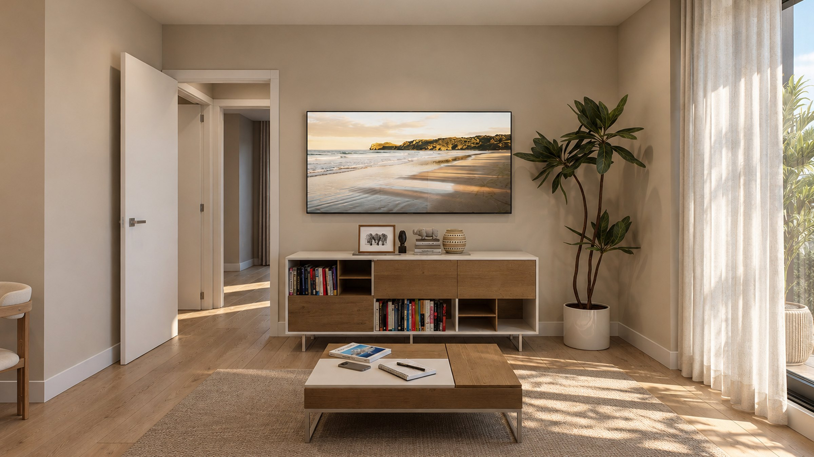
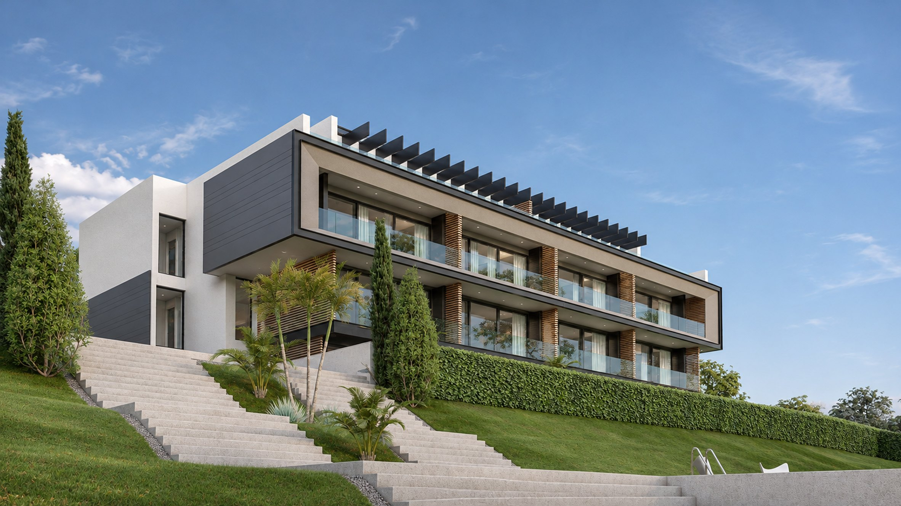
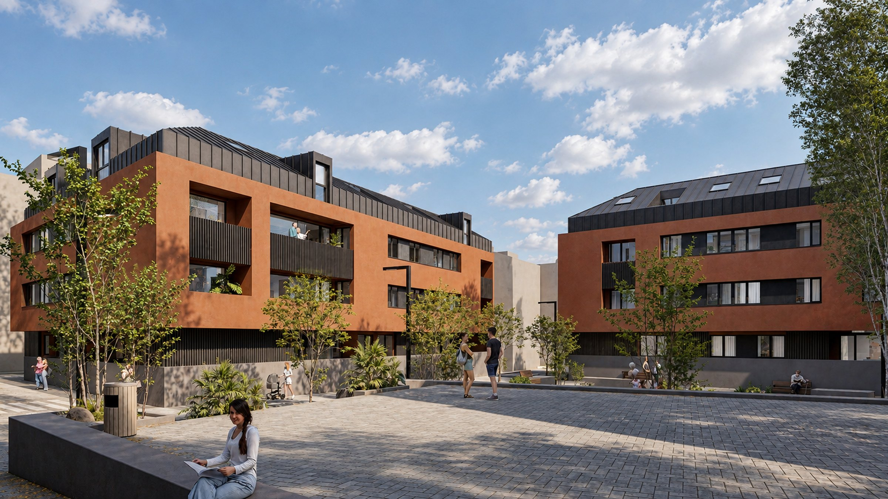
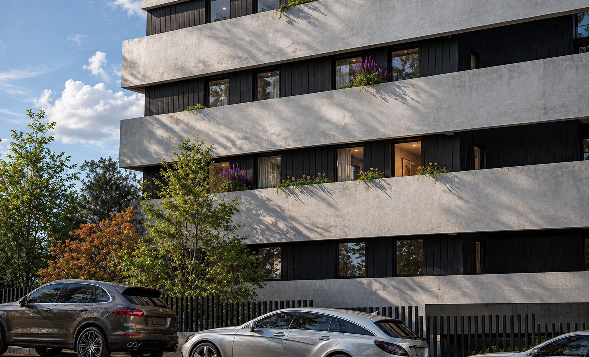

Portfolio
Architecture, seen before it’s built.
Visualization studio of Diego Moreno. Stills, animation and sales material for architects, developers and interior designers.
Visualization studio of Diego Moreno. Stills, animation and sales material for architects, developers and interior designers.

A complete set of images to present La Gerra, a residential development in a secluded area of Suances: how the building sits on its plot, the communal pool and gardens, and what the homes feel like inside.
The exteriors show the building through its cantilevered volumes, warm cladding and planted terraces, from street level and from above. The communal pool and garden get their own views, since they are a selling point of the development. Inside, a calm, natural palette with daylight, green views and the sea on the horizon makes each home easy to picture lived in.




A complete set of images to present Quinta Atlántica, a development of low-rise blocks in Suances: how it sits on its slope, the communal areas and what the homes feel like inside.
The exteriors read the project through its own materials: timber louvres, dark frames and glass against terraced gardens and the sea. Cameras look for the horizon between the blocks, and late-afternoon light gives depth to the façades. Inside, a warm and neutral palette with natural light and sea views makes the homes easy to imagine lived in.




A set of images to present Novalinas, a new residential building in central Torrelavega, a few metres from the cathedral, between Novalinas and San Bartolomé streets: how it fits into the city, the public space around it and what the homes offer.
The views are taken at pedestrian height so the building is read as part of the street and the new square. The terracotta façades, black metal roofs and slatted balconies are shown in daylight and at dusk, when the lit windows and the square come to life. Inside, a bright, warm interior shows the homes lived in.


A set of exterior images and a video to present Amura, a new residential building in Santander: the building in its street, the entrance and garden, and the terrace at the top.
Warm late-afternoon light rakes across the pale panels and the dark ribbed cladding, so the angled balconies cast long, clean shadows. The views move from the whole volume to details at street level — entrance, garden, terrace — and end on the rooftop, where the sea opens up. The video carries the same light into motion.


Images that place the building in its real context — light, vegetation, scale and street — before a single brick is laid.
Furnished, lit and styled spaces that let your client understand — and approve — an interior before anything is bought or built.
Walkthroughs and flythroughs that show a building in motion, with calm camera work that follows the way people will actually move through it.
Colour floor plans, infographics and assets that turn a development into something easy to understand, present and sell.